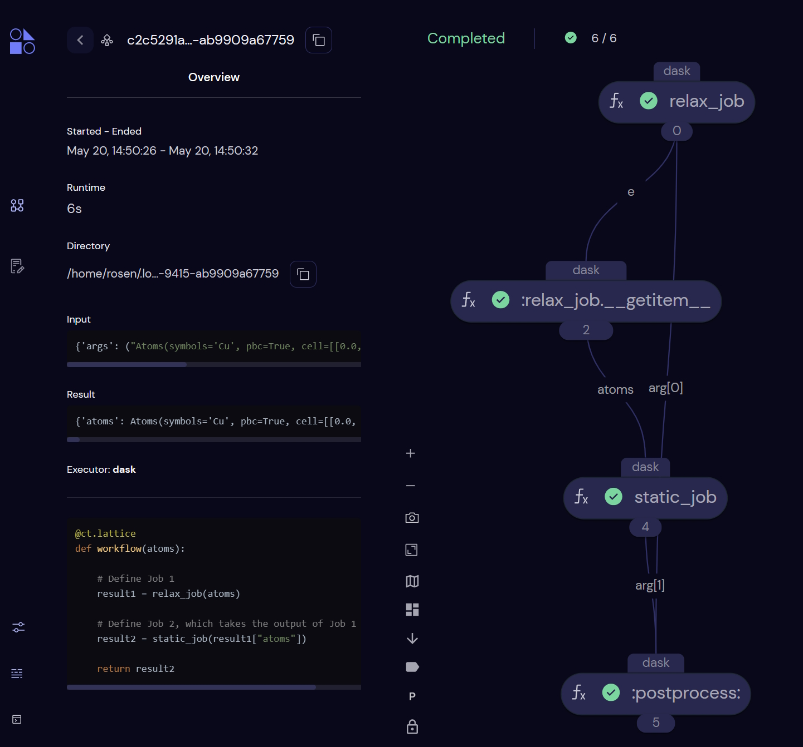
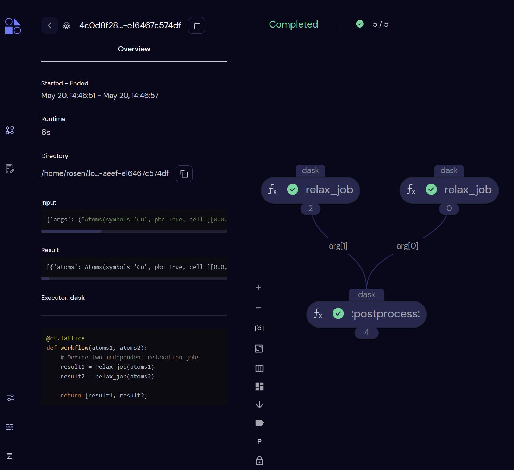
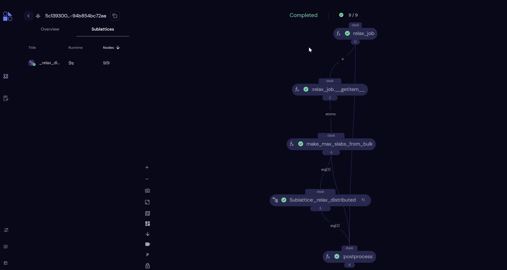

Going High-Throughput¶
Here, we will show how to use quacc with one of a variety of workflow engines to construct, dispatch, and monitor your calculations.
Tip
If you are just getting started with workflow engines, we recommend first trying Covalent.
Pre-Requisites¶
Take a moment to learn about the main Covalent Concepts, namely the Electron and Lattice objects, which describe individual compute tasks and workflows, respectively.
In Covalent, the @ct.lattice decorator indicates that the function is a workflow, and the @ct.electron decorator indicates that the function is a job (i.e. an individual compute task). If you plan to use a job scheduling system like Slurm, you can think of each Electron as an individual Slurm job.
All Electron and Lattice objects behave as normal Python functions when the necessary arguments are supplied. However, if the ct.dispatch command is used, the workflow will be dispatched to the Covalent server for execution and monitoring.
Info
For a more detailed tutorial on how to use Covalent, refer to the "Covalent Quick Start".
Take a moment to read Parsl documentation's "Quick Start" to get a sense of how Parsl works. Namely, you should understand the concept of a @python_app and @join_app, which describe individual compute tasks and dynamic job tasks, respectively.
Info
For a more detailed tutorial on how to use Parsl, refer to the "Parsl Tutorial" and the even more detailed "Parsl User Guide".
Take a moment to read the Jobflow documentation's Quick Start to get a sense of how Jobflow works. Namely, you should understand the Job and Flow definitions, which describe individual compute tasks and workflows, respectively.
Info
For a more detailed tutorial on how to use Jobflow, refer to the Jobflow Tutorials and this helpful guide written by Dr. Janine George.
Examples¶
Running a Simple Serial Workflow¶
We will now try running a simple workflow where we relax a bulk Cu structure using EMT and take the output of that calculation as the input to a follow-up static calculation with EMT.
graph LR
A[Input] --> B(Relax) --> C(Static) --> D[Output];Hint
If you haven't done so yet, make sure you started the Covalent server with covalent start in the command-line.
import covalent as ct
from ase.build import bulk
from quacc.recipes.emt.core import relax_job, static_job
# Define the workflow
@ct.lattice
def workflow(atoms):
# Define Job 1
result1 = relax_job(atoms)
# Define Job 2, which takes the output of Job 1 as input
result2 = static_job(result1)
return result2
# Make an Atoms object of a bulk Cu structure
atoms = bulk("Cu")
# Dispatch the workflow to the Covalent server
# with the bulk Cu Atoms object as the input
dispatch_id = ct.dispatch(workflow)(atoms)
# Fetch the result from the server
result = ct.get_result(dispatch_id, wait=True)
print(result)
You can see that it is quite trivial to set up a workflow using the recipes within quacc. We define the full workflow as a Lattice object that stitches together the individual workflow steps. The quacc.recipes.emt.core.relax_job and quacc.recipes.emt.core.static_job were both already defined with a @ct.electron decorator, so they will be interpreted by Covalent as Electron objects.
Covalent will also automatically construct a directed acyclic graph of the inputs and outputs for each calculation to determine which jobs are dependent on one another and the order the jobs should be run. In this example, Covalent will know not to run job2 until job1 has completed successfully.
The job will be dispatched to the Covalent server with the ct.dispatch command, which takes in the workflow function and the input arguments to the workflow. The ct.get_result command is used to fetch the results from the server.
Note
Because the workflow is only sent to the server with ct.dispatch, calling workflow(atoms) would run the workflow as if Covalent were not being used at all.

Hint
If you haven't done so yet, make sure you have loaded a Parsl configuration in your Python script. An example for running on your local machine is included below. Note that dynamic workflow recipes may fail if multi-threading is enabled, which is why we don't use the default parsl.load() configuration.
from parsl import python_app
from ase.build import bulk
# Define the Python apps
@python_app
def relax_app(atoms):
from quacc.recipes.emt.core import relax_job
return relax_job(atoms)
@python_app
def static_app(atoms):
from quacc.recipes.emt.core import static_job
return static_job(atoms)
# Make an Atoms object of a bulk Cu structure
atoms = bulk("Cu")
# Call App 1
future1 = relax_app(atoms)
# Call App 2, which takes the output of App 1 as input
future2 = static_app(future1.result())
# Print result
print(future2.result())
You can see that it is quite trivial to set up a Parsl workflow using the recipes within quacc. We define the full workflow as a function that stitches together the individual @python_app workflow steps.
The use of .result() serves to block any further calculations from running until it is resolved. Calling .result() also returns the function output as opposed to the AppFuture object. Technically, we did not need to call future1.result() because Parsl will automatically know that it cannot run static_app until future1 is resolved. Nonetheless, we have included it here for clarity.
Note
It is not considered good practice to include a .result() call in a @python_app or @join_app definition, which is why we didn't do so here.
from jobflow import Flow, job, run_locally
from ase.build import bulk
from quacc.recipes.emt.core import relax_job, static_job
# Make an Atoms object of a bulk Cu structure
atoms = bulk("Cu")
# Define Job 1
job1 = job(relax_job)(atoms)
# Define Job 2, which takes the output of Job 1 as input
job2 = job(static_job)(job1.output)
# Define the workflow
workflow = Flow([job1, job2])
# Run the workflow locally
responses = run_locally(workflow, create_folders=True)
# Get the result
result = responses[job2.uuid][1].output
print(result)
The key thing to note is that we need to transform the quacc recipe, which is a normal function, into a Job object. This can be done using the @job decorator and a new function definition or, more compactly, via job(<function>).
We also must stitch the individual Job objects together into a Flow, which can be easily achieved by passing them to the Flow() constructor. The Flow object will automatically determine the order in which the jobs should be run based on the inputs and outputs of each job. In this case, it will know not to run job2 until job1 has completed.
We chose to run the job locally, but other workflow managers supported by Jobflow can be imported and used.
Running a Simple Parallel Workflow¶
Now let's consider a similar but nonetheless distinct example. Here, we will define a workflow where we will carry out two EMT structure relaxations, but the two jobs are not dependent on one another. In this example, Covalent will know that it can run the two jobs separately, and even if Job 1 were to fail, Job 2 would still progress.
graph LR
A[Input] --> B(Relax) --> D[Output]
A[Input] --> C(Relax) --> D[Output];import covalent as ct
from ase.build import bulk, molecule
from quacc.recipes.emt.core import relax_job
# Define workflow
@ct.lattice
def workflow(atoms1, atoms2):
# Define two independent relaxation jobs
result1 = relax_job(atoms1)
result2 = relax_job(atoms2)
return {"result1": result1, "result2": result2}
# Define two Atoms objects
atoms1 = bulk("Cu")
atoms2 = molecule("N2")
# Dispatch the workflow to the Covalent server
dispatch_id = ct.dispatch(workflow)(atoms1, atoms2)
# Fetch the results from the server
result = ct.get_result(dispatch_id, wait=True)
print(result)

from parsl import python_app
from ase.build import bulk, molecule
# Define the Python app
@python_app
def relax_app(atoms):
from quacc.recipes.emt.core import relax_job
return relax_job(atoms)
# Define two Atoms objects
atoms1 = bulk("Cu")
atoms2 = molecule("N2")
# Define two independent relaxation jobs
future1 = relax_app(atoms1)
future2 = relax_app(atoms2)
# Print the results
print(future1.result(), future2.result())
Note
If you find defining a new function for each PythonApp a bit annoying, you can use the following shorthand: relax_app=python_app(relax_job.electron_object.function).
from jobflow import job, Flow, run_locally
from ase.build import bulk, molecule
from quacc.recipes.emt.core import relax_job
# Define two Atoms objects
atoms1 = bulk("Cu")
atoms2 = molecule("N2")
# Define two independent relaxation jobs
job1 = job(relax_job)(atoms1)
job2 = job(relax_job)(atoms2)
# Define the workflow
workflow = Flow([job1, job2])
# Run the workflow locally
responses = run_locally(workflow, create_folders=True)
# Get the result
result = responses[job2.uuid][1].output
print(result)
Running Workflows with Complex Connectivity¶
For this example, let's consider a toy scenario where we wish to relax a bulk Cu structure, carve all possible slabs, and then run a new relaxation calculation on each slab (with no static calculation at the end). This is an example of a dynamic workflow.
graph LR
A[Input] --> B(Relax) --> C(Make Slabs)
C(Make Slabs) --> D(Slab Relax) --> H[Output]
C(Make Slabs) --> E(Slab Relax) --> H[Output]
C(Make Slabs) --> F(Slab Relax) --> H[Output]
C(Make Slabs) --> G(Slab Relax) --> H[Output];In quacc, there are two types of recipes: individual compute tasks with the suffix _job and pre-made multi-step workflows with the suffix _flow. Here, we are interested in importing a pre-made workflow. Refer to the example below:
import covalent as ct
from ase.build import bulk
from quacc.recipes.emt.core import relax_job
from quacc.recipes.emt.slabs import bulk_to_slabs_flow
@ct.lattice
def workflow(atoms):
relaxed_bulk = relax_job(atoms)
relaxed_slabs = bulk_to_slabs_flow(relaxed_bulk, slab_static_electron=None)
return relaxed_slabs
atoms = bulk("Cu")
dispatch_id = ct.dispatch(workflow)(atoms)
result = ct.get_result(dispatch_id, wait=True)
print(result)
We have imported the quacc.recipes.emt.slabs.bulk_to_slabs_flow function, which takes an Atoms object along with several optional parameters. For demonstration purposes, we specify the slab_static_electron=None option to do a relaxation but disable the static calculation on each slab. All we have to do to define the workflow is wrap it inside a @ct.lattice decorator.
Due to the dynamic nature of bulk_to_slabs_flow, the number of returned slabs will be dependent on the input Atoms object. The pattern for creating a dynamic workflow in Covalent is called a "sublattice". The sublattice, which is really just a fancy name for a sub-workflow within a larger workflow, and its individual compute tasks can also be viewed in the Covalent UI.
Hint
You don't need to set wait=True in practice. Once you call ct.dispatch, the workflow will begin running. The ct.get_result function is used to fetch the workflow status and results from the server.

The Inefficient Way
from parsl import python_app
from ase.build import bulk
@python_app
def relax_app(atoms):
from quacc.recipes.emt.core import relax_job
return relax_job(atoms)
@python_app
def bulk_to_slabs_app(atoms):
from quacc.recipes.emt.slabs import bulk_to_slabs_flow
return bulk_to_slabs_flow(atoms, slab_static_electron=None)
# Define the Atoms object
atoms = bulk("Cu")
# Define the workflow
future1 = relax_app(atoms)
future2 = bulk_to_slabs_app(future1.result())
# Print the results
print(future2.result())
When running a Covalent-based workflow like .emt.slabs.bulk_to_slabs_flow above, the entire function will run as a single compute task even though it is composed of several individual sub-tasks. If these sub-tasks are compute-intensive, this might not be the most efficient use of resources.
The Efficient Way
Quacc fully supports Parsl-based workflows to resolve this limitation. For example, the workflow above can be equivalently run as follows using the Parsl-specific .emt.parsl.slabs.bulk_to_slabs_flow workflow:
from parsl import python_app
from ase.build import bulk
from quacc.recipes.emt.parsl.slabs import bulk_to_slabs_flow
# Define the Python App
@python_app
def relax_app(atoms):
from quacc.recipes.emt.core import relax_job
return relax_job(atoms)
# Define the Atoms object
atoms = bulk("Cu")
# Define the workflow
future1 = relax_app(atoms)
future2 = bulk_to_slabs_flow(future1.result(), slab_static_app=None)
# Print the results
print(future2.result())
In this example, all the individual tasks and sub-tasks are run as separate jobs, which is more efficient. By comparing .emt.parsl.slabs.bulk_to_slabs_flow with its Covalent counterpart .emt.slabs.bulk_to_slabs_flow, you can see that the two are extremely similar such that it is often straightforward to interconvert between the two.
Note
We didn't need to wrap bulk_to_slabs_flow with a @python_app decorator because it is simply a collection of PythonApp objects and is already returning an AppFuture.
The Inefficient Way
from jobflow immport job, Flow, run_locally
from ase.build import bulk
from quacc.recipes.emt.core import relax_job
from quacc.recipes.emt.slabs import bulk_to_slabs_flow
# Define the Atoms object
atoms = bulk("Cu")
# Construct the Flow
job1 = job(relax_job)(atoms)
job2 = job(bulk_to_slabs_flow)(job1.output, slab_static_electron=None)
workflow = Flow([job1, job2])
# Run the workflow locally
responses = run_locally(workflow, create_folders=True)
# Get the result
result = responses[job2.uuid][1].output
print(result)
We have imported the .emt.slabs.bulk_to_slabs_flow function, which takes an Atoms object along with several optional parameters. For demonstration purposes, we specify the slab_static_electron=None option to do a relaxation but disable the static calculation on each slab. All we have to do to define the workflow is stitch together the individual @job steps into a single Flow object.
The Efficient Way
Quacc fully supports Jobflow-based workflows to resolve this limitation. For example, the workflow above can be equivalently run as follows using the Jobflow-specific .emt.jobflow.slabs.bulk_to_slabs_flow workflow:
from jobflow import job, Flow, run_locally
from ase.build import bulk
from quacc.recipes.emt.core import relax_job
from quacc.recipes.emt.jobflow.slabs import bulk_to_slabs_flow
# Define the Atoms object
atoms = bulk("Cu")
# Construct the Flow
job1 = job(relax_job)(atoms)
job2 = job(bulk_to_slabs_flow)(job1.output, slab_static_job=None)
workflow = Flow([job1, job2])
# Run the workflow locally
run_locally(workflow, create_folders=True)
In this example, all the individual tasks and sub-tasks are run as separate jobs, which is more efficient. By comparing .emt.jobflow.slabs.bulk_to_slabs_flow with its Covalent counterpart .emt.slabs.bulk_to_slabs_flow, you can see that the two are extremely similar such that it is often straightforward to interconvert between the two. In the case of bulk_to_slabs_flow, it actually returns a Response(replace) object that dynamically replaces the Flow with several downstream jobs.
Deploying Calculations¶
By default, Covalent will run all Electron tasks on your local machine using the DaskExecutor. This is a parameter that you can control. For instance, you may want to define the executor to be based on Slurm using the SlurmExecutor to submit a job to an HPC cluster. The example below highlights how one can change the executor.
Setting Executors via the Lattice Object
If you want to use the same executor for all the Electron objects in a Lattice, you can pass the executor keyword argument to the @ct.lattice decorator, as shown below.
import covalent as ct
from ase.build import bulk
from quacc.recipes.emt.core import relax_job, static_job
@ct.lattice(executor="local")
def workflow(atoms):
result1 = relax_job(atoms)
result2 = static_job(result1)
return result2
atoms = bulk("Cu")
dispatch_id = ct.dispatch(workflow)(atoms)
result = ct.get_result(dispatch_id, wait=True)
print(result)
Setting Executors via the Electron Objects
The individual Electron executor options can be modified after they are imported as follows:
import covalent as ct
from ase.build import bulk
from quacc.recipes.emt.core import relax_job, static_job
@ct.lattice
def workflow(atoms):
job1 = relax_job
job1.electron_object.executor = "dask"
job2 = static_job
job2.electron_object.executor = "local"
output1 = job1(atoms)
output2 = job2(output1)
return output2
atoms = bulk("Cu")
dispatch_id = ct.dispatch(workflow)(atoms)
result = ct.get_result(dispatch_id, wait=True)
print(result)
Hint
If you are defining your own workflow functions to use, you can also set the executor for individual Electron objects by passing the executor keyword argument to the @ct.electron decorator.
Configuring Executors
Refer to the executor documentation for instructions on how to configure Covalent for your desired machines.
By default, the workdir for the Dask (default) and local executors is set to ~/.cache/covalent/workdir. This is where any files generated at runtime will be stored. You can change both of these parameters to the directories of your choosing by editing the Covalent configuration file directly or via the ct.set_config() command.
For submitting jobs to Perlmutter at NERSC from your local machine, an example SlurmExecutor configuration with support for an sshproxy-based multi-factor authentication certificate might look like the following:
n_nodes = 1
n_cores_per_node = 48
executor = ct.executor.SlurmExecutor(
username="YourUserName",
address="perlmutter-p1.nersc.gov",
ssh_key_file="~/.ssh/nersc",
cert_file="~/.ssh/nersc-cert.pub",
remote_workdir="$SCRATCH",
conda_env="quacc",
options={
f"nodes": {n_nodes},
"qos": "debug",
"constraint": "cpu",
"account": "YourAccountName",
"job-name": "quacc",
"time": "00:10:00",
},
prerun_commands=[
"export COVALENT_CONFIG_DIR=$SCRATCH",
f"export QUACC_VASP_PARALLEL_CMD='srun -N {n_nodes} --ntasks-per-node={n_cores_per_node} --cpu_bind=cores'",
],
use_srun=False,
)
Important
The SlurmExecutor must have use_srun=False in order for ASE-based calculators to be launched appropriately.
Out-of-the-box, Parsl will run on your local machine. However, in practice you will probably want to run your Parsl workflows on HPC machines.
Note
If you are just starting out, try running some test calculations locally first. Then come back and set up the relevant configuration files for your desired machines.
Configuring Executors
To configure Parsl for the high-performance computing environment of your choice, refer to the executor Configuration page in the Parsl documentation.
For Perlmutter at NERSC, example HighThroughputExecutor configurations can be found in the NERSC Documentation. A simple one is reproduced below that allows for job submission from the login node. This example will create a single Slurm job that will run one PythonApp at a time on a single node and is good for testing out some of the examples above.
from parsl.config import Config
from parsl.executors import HighThroughputExecutor
from parsl.launchers import SimpleLauncher
from parsl.providers import SlurmProvider
config = Config(
max_idletime=120,
executors=[
HighThroughputExecutor(
label="quacc_HTEX",
max_workers=1,
provider=SlurmProvider(
account="MyAccountName",
nodes_per_block=1,
scheduler_options="#SBATCH -q debug -C cpu",
worker_init="source activate quacc",
walltime="00:10:00",
cmd_timeout=120,
launcher = SimpleLauncher(),
),
)
],
)
The individual arguments are as follows:
max_idletime: The maximum amount of time (in seconds) to allow the executor to be idle before the Slurm job is cancelled.label: A label for the executor instance, used during file I/O.max_workers: Maximum number of workers to allow on a node.SlurmProvider(): The provider to use for job submission. This can be changed toLocalProvider()if you wish to have the Parsl process run on a compute node rather than the login node.account: Your NERSC account name.nodes_per_block: The number of nodes to request per job. By default, all cores on the node will be requested (seettingcores_per_nodewill override this).scheduler_options: Any additional#SBATCHoptions can be included here.worker_init: Commands to run before the job starts, typically used for activating a given Python environment.walltime: The maximum amount of time to allow the job to run inHH:MM:SSformat.cmd_timeout: The maximum time to wait (in seconds) for the job scheduler info to be retrieved/sent.launcher: The type of Launcher to use. Note thatSimpleLauncher()must be used instead of the commonly usedSrunLauncher()to allow quacc subprocesses to launch their ownsruncommands.
Unlike some other workflow engines, Parsl (by default) is built for "jobpacking" where the allocated nodes continually pull in new workers (until the walltime is reached). This makes it possible to request a large number of nodes that continually pull in new jobs rather than submitting a large number of small jobs to the scheduler, which can be more efficient. In other words, don't be surprised if the Slurm job continues to run even when your submitted task has completed.
Scaling Up
Now let's consider a more realistic scenario. Suppose we want to have a single Slurm job that reserves 8 nodes, and each PythonApp (e.g. VASP calculation) will run on 2 nodes (let's assume each node has 48 cores total, so that's a total of 96 cores for each calculation). Parsl will act as an orchestrator in the background of one of the nodes. Our config will now look like the following.
n_parallel_calcs = 4 # Number of quacc calculations to run in parallel
n_nodes_per_calc = 2 # Number of nodes to reserve for each calculation
n_cores_per_node = 48 # Number of CPU cores per node
vasp_parallel_cmd = f"srun -N {n_nodes_per_calc} --ntasks-per-node={n_cores_per_node} --cpu_bind=cores"
config = Config(
max_idletime=300,
executors=[
HighThroughputExecutor(
label="quacc_HTEX",
max_workers=n_parallel_calcs,
cores_per_worker=1e-6,
provider=SlurmProvider(
account="MyAccountName",
nodes_per_block=n_nodes_per_calc*n_parallel_calcs,
scheduler_options="#SBATCH -q debug -C cpu",
worker_init=f"source activate quacc && module load vasp && export QUACC_VASP_PARALLEL_CMD={vasp_parallel_cmd}",
walltime="00:10:00",
launcher = SimpleLauncher(),
cmd_timeout=120,
init_blocks=0,
min_blocks=1,
max_blocks=1,
),
)
],
)
In addition to some modified parameters, there are some new ones here too. The most notable is the definition of init_blocks, min_blocks, and max_blocks, which set the number of active blocks (e.g. Slurm jobs) and can be modified to enable elastic resource management. We also set cores_per_worker to a small value so that the pilot job (e.g. the Parsl orchestrator) is allowed to be oversubscribed with scheduling processes.
Tip
Dr. Logan Ward has a nice example on YouTube describing a very similar example here.
Warning
By default, the ThreadPoolExecutor (which is used when calling parsl.load()) is run in a multi-threaded mode, which may cause I/O errors when running multiple calculations simultaneously. We do not recommend using Parsl-based multi-threading at this time if there is any file I/O in your workflow.
Out-of-the box, Jobflow can be used to run on your local machine. You will, however, need a "manager" to run your workflows on HPC machines. The currently recommended manager for Jobflow is FireWorks, which is described here.
Converting Between Jobflow and FireWorks
The jobflow.managers.fireworks module has all the tools you need to convert your Jobflow workflows to a format that is suitable for FireWorks.
Converting a Job to a Firework
To convert a Job to a firework and add it to your launch pad:
from fireworks import LaunchPad
from jobflow.managers.fireworks import job_to_firework
fw = job_to_firework(job)
lpad = LaunchPad.auto_load()
lpad.add_wf(fw)
Converting a Flow to a Workflow
To convert a Flow to a workflow and add it to your launch pad:
from fireworks import LaunchPad
from jobflow.managers.fireworks import flow_to_workflow
wf = flow_to_workflow(flow)
lpad = LaunchPad.auto_load()
lpad.add_wf(wf)
Dispatching Calculations
With a workflow added to your launch pad, on the desired machine of choice, you can run qlaunch rapidfire --nlaunches <N> (where <N> is the number of jobs to submit) in the command line to submit your workflows to the job scheduler. Running qlaunch rapidfire -m <N> will ensure that <N> jobs are always in the queue or running. To modify the order in which jobs are run, a priority can be set via lpad set_priority <priority> -i <FWID> where <priority> is a number.
By default, qlaunch will launch Slurm jobs that then poll for work. This means that more Slurm jobs may be submitted than there are jobs to run. To modify the behavior of qlaunch to only submit a Slurm job for each "READY" FireWork in the launchpad, use the -r ("reserved") flag.
Monitoring the Launchpad
The easiest way to monitor the state of your launched FireWorks and workflows is through the GUI, which can be viewed with lpad webgui. To get the status of running fireworks from the command line, you can run lpad get_fws -s RUNNING. Other statuses can also be provided as well as individual FireWorks IDs.
To rerun a specific FireWork, one can use the rerun_fws command like so: lpad rerun_fws -i <FWID> where <FWID> is the FireWork ID. Similarly, one can rerun all fizzled jobs via lpad rerun_fws -s FIZZLED. More complicated Mongo-style queries can also be carried out. Cancelling a workflow can be done with lpad delete_wflows -i <FWID>.
Refer to the lpad -h help menu for more details.
Continuous Job Submission
To ensure that jobs are continually submitted to the queue you can use tmux to preserve the job submission process even when the SSH session is terminated. For example, running tmux new -s launcher will create a new tmux session named launcher. To exit the tmux session while still preserving any running tasks on the login node, press ctrl+b followed by d. To re-enter the tmux session, run tmux attach -t launcher. Additional tmux commands can be found on the tmux cheatsheet.
Learn More¶
That ends the Covalent section of the documentation. If you want to learn more about Covalent, you can read the Covalent Documentation. Please refer to the Covalent Discussion Board for any Covalent-specific questions.
That ends the Parsl section of the documentation. If you want to learn more about Parsl, you can read the Parsl Documentation. Please refer to the Parsl Slack Channel for any Parsl-specific questions.
That ends the Jobflow section of the documentation. If you want to learn more about Jobflow, you can read the Jobflow Documentation. Please refer to the Jobflow Discussions Board for Jobflow-specific questions.